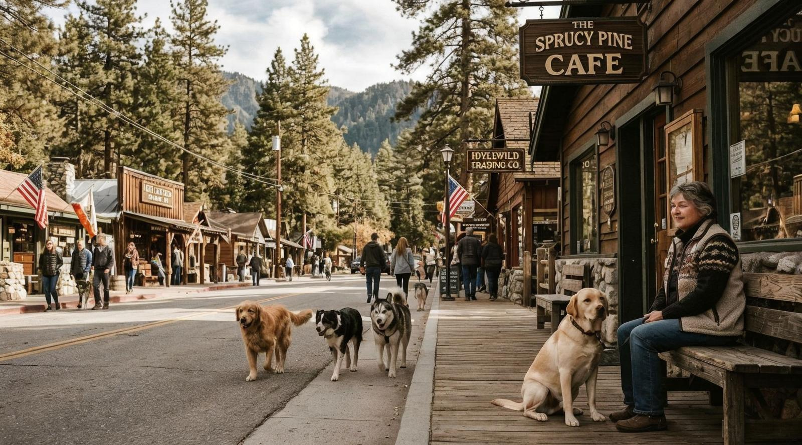
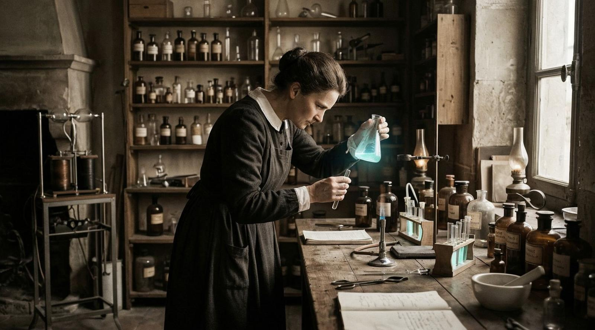
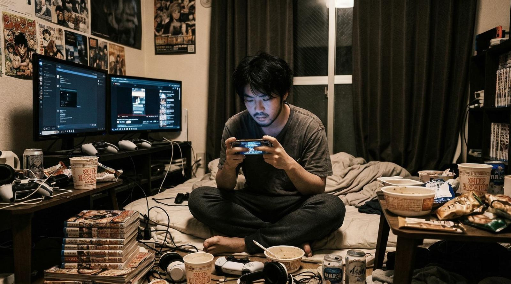
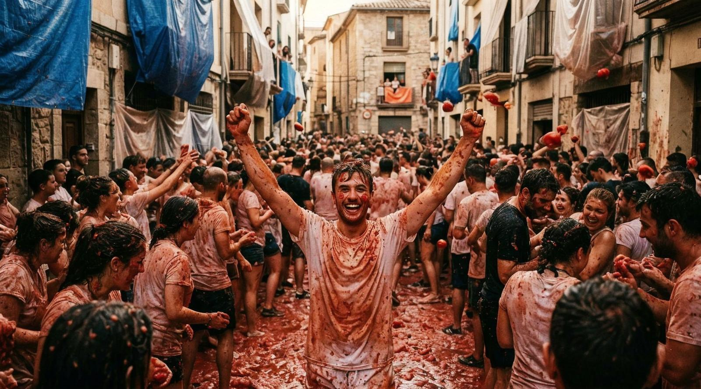
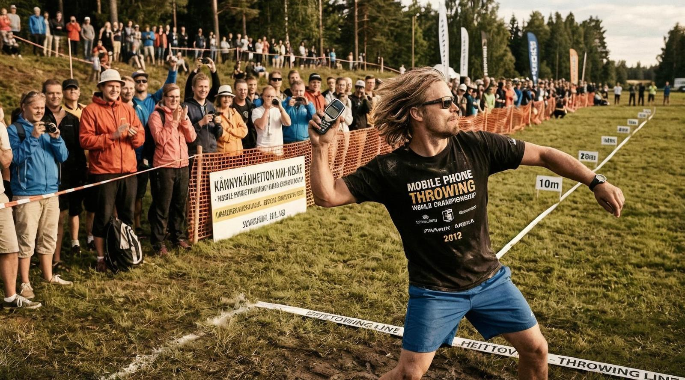
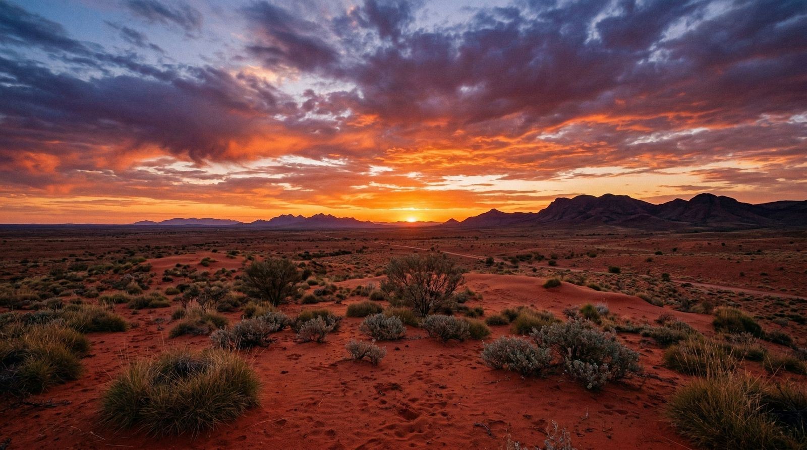
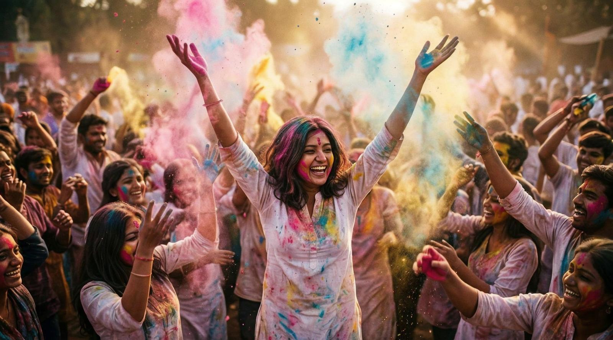

În Longyearbyen, cel mai nordic oraș din lume, înmormântările sunt interzise de 70 de ani. Permafrostul conservă corpurile în loc să le descompună. Cine moare aici e transportat pe continent. O colonie de 2.400 de suflete între gheață, urși polari și un cod penal care interzice naturii să-și facă treaba.
Punctul zero al fenomenelor inexplicabile din România — copaci contorsionați în unghiuri imposibile, poieni unde vegetația refuză să crească și o istorie de mistere documentate de biologi și cercetători din întreaga lume.



Nu sunt bolnavi. Nu sunt în pericol. Au ales, cu tot confortul dat de o societate care funcționează, să se retragă complet din ea. Guvernul japonez a creat un minister special pentru a-i convinge să iasă afară.

A început în 1945 când un grup de tineri s-a bătut cu roșii la un festival. S-au simțit atât de bine că au venit și anul următor. Acum e patrimoniu cultural imaterial. Primăria cumpără 40 de tone de roșii special pentru asta.

Există categorii pe distanță, pe stil și pe originalitate. Recordul mondial este de 110 metri. Organizatorii colectează telefoanele și le reciclează. A început ca protest la adresa tehnologiei. A devenit cel mai mare eveniment de reciclare din țară.
„Problema nu e că viața e scurtă. E că așteptăm prea mult timp înainte să îndrăznim să o trăim."
Există un paradox al epocii noastre: niciodată nu am avut mai mult acces la conținut, la stimuli, la distracție de orice fel — și totuși, niciodată nu am simțit mai puternic nevoia de și mai mult. Răsfoim prin feed-uri nu pentru că ne dorim ceva anume. O facem pentru că nu știm cum să nu o facem.
Plictiseala, spun neuroștiințele, nu este absența gândurilor. Este un mod de procesare. Când nu avem nimic de urmărit activ, creierul intră în ceea ce cercetătorii numesc modul implicit — o stare în care conectăm puncte, rezolvăm probleme pe care nici nu știam că le avem, procesăm emoții nerezolvate. E fabrica secretă a ideilor bune.
Am eliminat-o aproape complet din viețile noastre. Și nu prin neglijență, ci prin design intenționat al unor platforme care câștigă bani din fiecare secundă în care atenția noastră e capturată.
Continuă să citești →
În Coober Pedy, oamenii trăiesc underground pentru a scăpa de căldura de 50°C. Nu există adrese poștale, nu există poliție și toată lumea săpe după opale. Funcționează de 100 de ani.

La Grishneshwar Temple, bebelușii sunt aruncați de la o înălțime de 15 metri într-o pânză ținută de bărbați. Tradiția de 500 de ani spune că aduce sănătate și prosperitate.
Orice cetățean al celor 46 de țări semnatare poate trăi și munci în Svalbard fără viză. Nu există taxe, nu există restricții. Doar urși polari și întuneric 6 luni pe an.